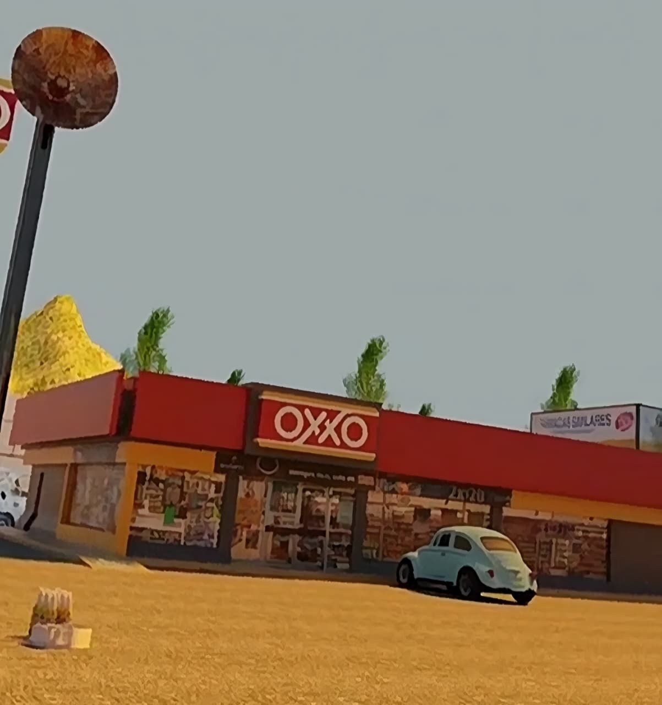
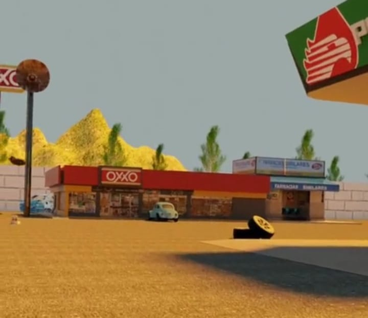
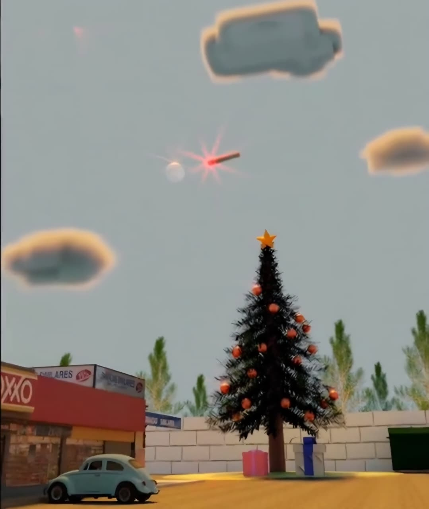

METEORITO 2
Animación 3D en BlenderMETEORITO 2 es el intento de remake de mi primer proyecto formal de animación ("Meteorito"). Es una de las joyas creativas de mi adolescencia y el proyecto con el que aprendí a animar y renderizar en 3D desde cero.

La Historia Detrás del Proyecto
La creación y renderización de este proyecto requirió un enorme esfuerzo debido a las limitaciones de hardware con las que contaba en ese momento. Trabajar con una tarjeta de video modesta hizo que cada paso fuera una prueba de paciencia y dedicación.
Me tomó entre 3 y 4 meses aprender a dominar Blender mientras practicaba realizando estas secuencias. El desarrollo completo de la animación llevó alrededor de 4 a 5 meses, abarcando desde la escritura del guión y el aprendizaje de animación, hasta pedirle apoyo a una amiga de la preparatoria para realizar un pequeño doblaje de voz en una escena clave.
Al ser novato y trabajar en una computadora humilde, corregir errores era agotador. La fase de renderizado tomó entre 1 mes y 1 mes y medio: para no perder el progreso si la PC se apagaba, renderizaba en fragmentos de 10 en 10 segundos. Al final, uní todas las partes en edición para lograr el resultado final.
Capturas del Proyecto

